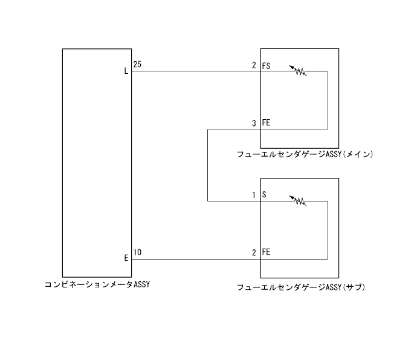
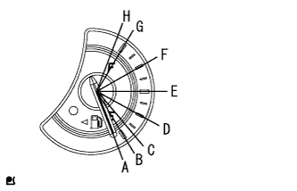
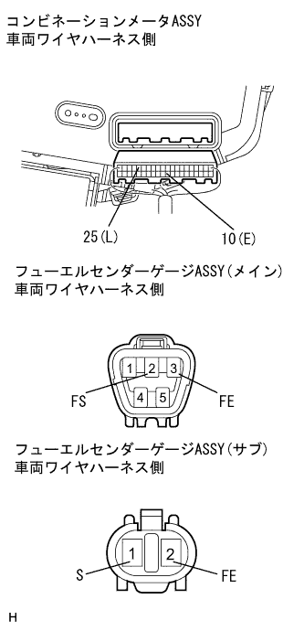
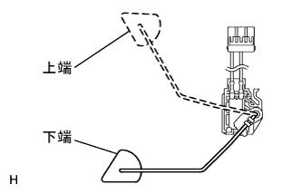
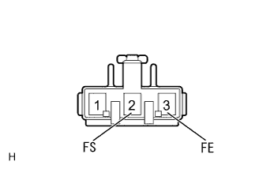
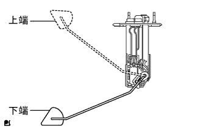
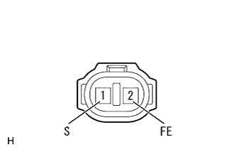

Meter & Gauge System Fuel Receiver Gauge Malfunction |

| Step 1 | Perform TaSCAN Active Test (Combination Meter) |
 |
Using SST (TaSCAN), follow the prompts on the screen to display the "Active Test" screen and check the fuel receiver gauge in the combination meter assembly.
| Item Name | Item Description | Inspection Item |
|---|---|---|
| Fuel gauge | Fuel Gauge Indication Switching |
|
| Result | Proceed to |
|---|---|
| Gauge operation in Active Test is normal | A |
| Gauge operation in Active Test is abnormal | B |
|
| ||||
| A | |
| Step 2 | Read TaSCAN Data (Combination Meter) |
Using SST (TaSCAN), follow the prompts on the screen to display the "ECU Data Monitor" screen and check the computer data.
| Item Name (Symbol) | Item Description/Display Range | Standard Value (L) | Remarks |
|---|---|---|---|
| Fuel sender input value (FUEL) | Fuel sender input value Display range: 0 to 127.5 [L] | 53.4 | Fuel indication position F |
| Fuel sender input value (FUEL) | Fuel sender input value Display range: 0 to 127.5 [L] | - | Fuel indication position 3/4 |
| Fuel sender input value (FUEL) | Fuel sender input value Display range: 0 to 127.5 [L] | 30.4 | Fuel indication position 1/2 |
| Fuel sender input value (FUEL) | Fuel sender input value Display range: 0 to 127.5 [L] | - | Fuel indication position 1/4 |
| Fuel sender input value (FUEL) | Fuel sender input value Display range: 0 to 127.5 [L] | 6.1 | Fuel indication position E |
| Result | Proceed to |
|---|---|
| ECU data monitor standard value and fuel receiver gauge value are almost the same | A |
| ECU data monitor standard value and fuel receiver gauge value differ | B |
|
| ||||
| A | |
| Step 3 | Inspect Wire Harness or Connector (Combination Meter Assembly - Fuel Sender Gauge) |
 |
Disconnect the combination meter assembly connector.
Disconnect the fuel sender gauge assembly (main) connector.
Disconnect the fuel sender gauge assembly (sub) connector.
Using SST (Toyota electrical tester), measure the resistance between each terminal of the vehicle side wire harness connectors.
| Tester Connection | Condition | Standard |
|---|---|---|
| 25(L) - 2(FS) | Always | Below 1 Ω |
| 2 (FS) - Body ground | Always | 10k Ω or higher |
| Tester Connection | Condition | Standard |
|---|---|---|
| 3(FE) - 1(S) | Always | Below 1 Ω |
| 3 (FE) - Body ground | Always | 10k Ω or higher |
| Tester Connection | Condition | Standard |
|---|---|---|
| 2(FE) - 10(E) | Always | Below 1 Ω |
| 2 (FE) - Body ground | Always | 10k Ω or higher |
|
| ||||
| OK | |
| Step 4 | Inspect Fuel Sender Gauge Assembly |
  |
Check that the float of the fuel sender gauge assembly (main) moves smoothly between the F level (upper end position) ←→ E level (lower end position).
Using SST (Toyota electrical tester), measure the resistance between the connector terminals at the upper and lower float positions. Also, check that the resistance changes continuously.
| Tester Connection | Condition | Standard |
|---|---|---|
| 2(FS) - 3(FE) | F (float upper end position) | 6.5 to 8.5Ω |
| 2(FS) - 3(FE) | E (float lower end position) | 186.9 to 191.9Ω |
 |
Check that the float of the fuel sender gauge assembly (sub) moves smoothly between the F level (upper end position) ←→ E level (lower end position).
 |
Using SST (Toyota electrical tester), measure the resistance between the connector terminals at the upper and lower float positions. Also, check that the resistance changes continuously.
| Tester Connection | Condition | Standard |
|---|---|---|
| 1(S) - 2(FE) | F (float upper end position) | 6.5 to 8.5Ω |
| 1(S) - 2(FE) | E (float lower end position) | 218.6 to 222.6Ω |
|
| ||||
| OK | |
| Step 5 | Replace Combination Meter Assembly |
Replace the combination meter assembly with a new or known good one and check the operation of the fuel sender gauge.
| Result | Proceed to |
|---|---|
| Operates normally | OK |
| Does not operate normally | NG |
|
| ||||
| OK | ||
| ||